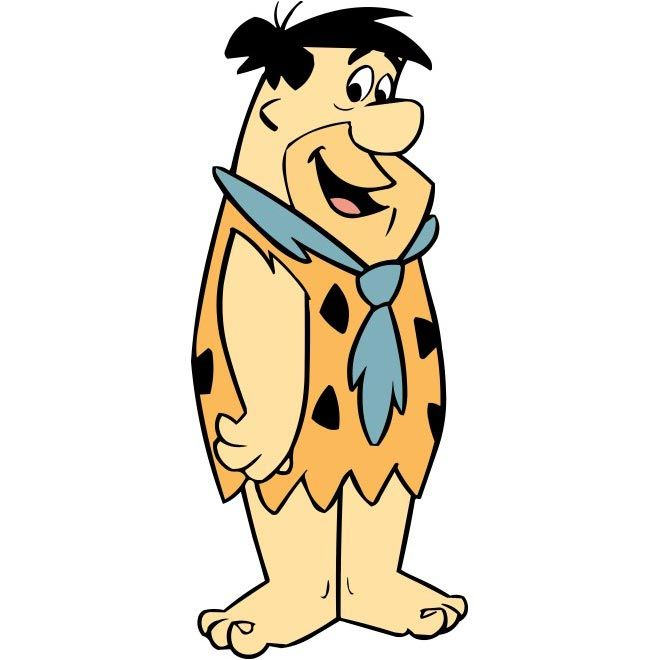

|
Barney Rubble |
Barney Rubble is a fictional character who appears in the television animated series The Flintstones. He is
the diminutive, blond-haired caveman husband of Betty Rubble and adoptive father of Bamm-Bamm Rubble. His
best friend is his next door neighbor, Fred. |
DETAYLI BİLGİ |
|  |
Fred Flintstone |
The main character of the animated sitcom The Flintstones, which aired during prime-time on ABC during the
original series' run from 1960 to 1966. |
DETAYLI BİLGİ |
 |
Betty Rubble |
Betty Rubble is a fictional character in the television animated series The Flintstones and its spin-offs
and live-action motion pictures. |
DETAYLI BİLGİ |